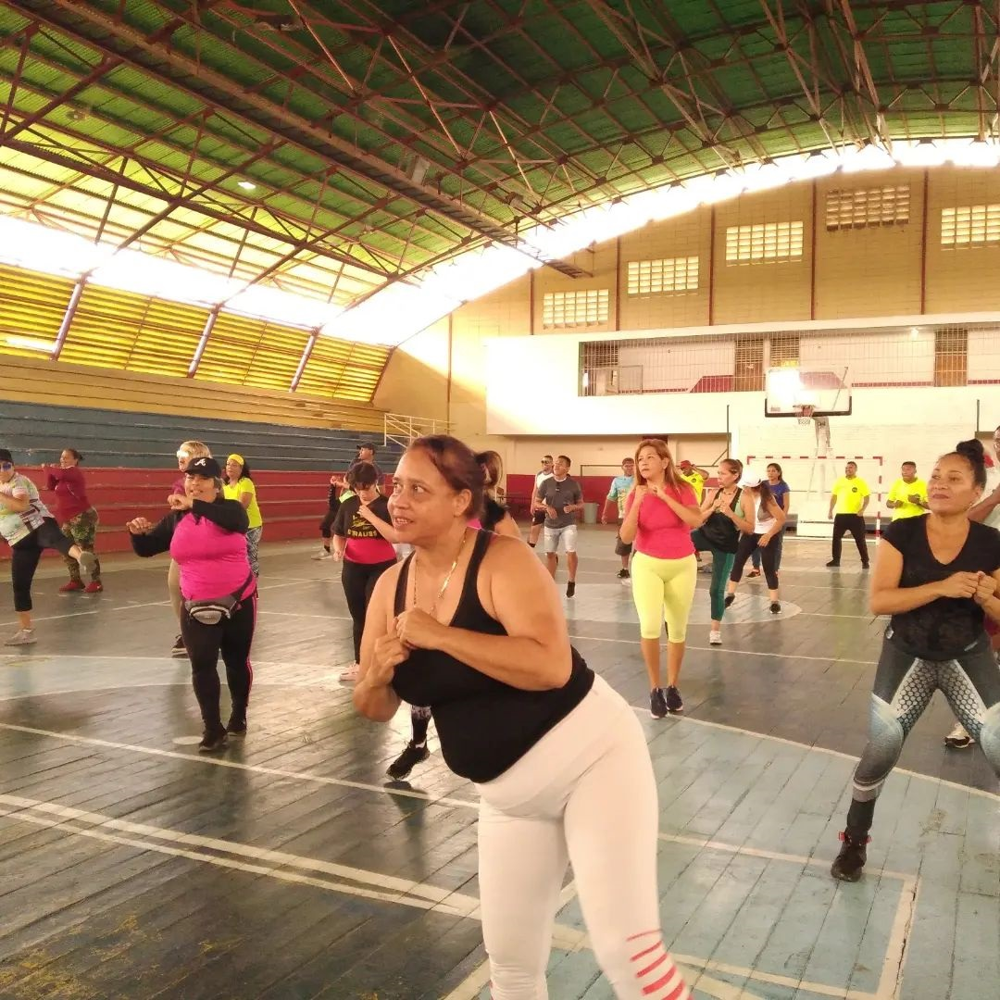
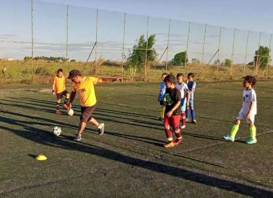
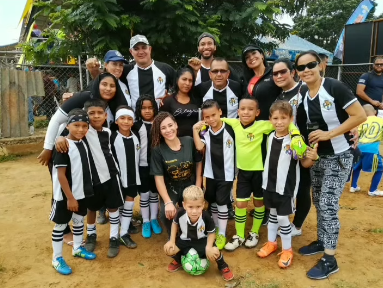
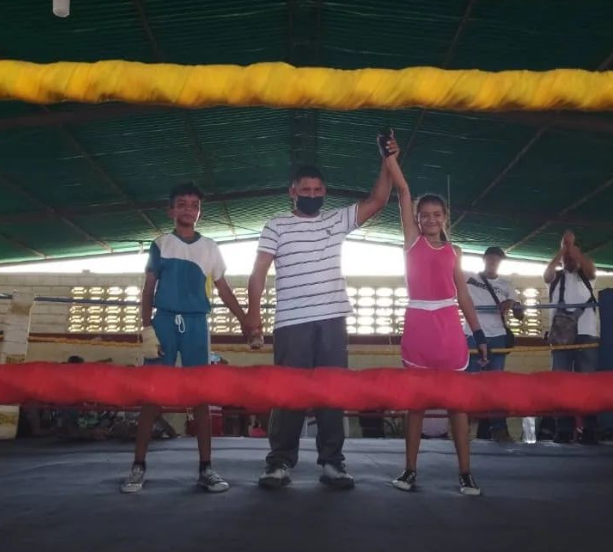
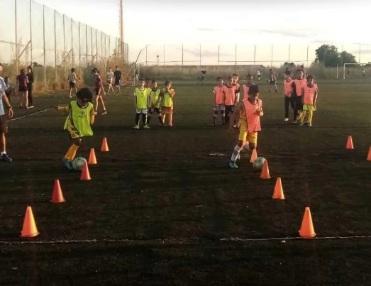

GALERIA
-

Clase de Tae-Tek, Aerobics y bailes al ritmo de la musica
Paraqueima en fomentar la actividad física en nuestro Municipio, llevo a cabo el 1er entrenamiento de la caminata de los gordos dandole seguimiento y continuidad a estas actividades.
-

Entrenamientos de fútbol campo
David Muñoz está comprometido con el éxito de sus jugadores y trabaja para ayudarlos a alcanzar su máximo potencial. Los entrenamientos se llevan a cabo de lunes a viernes en el Estadio de fútbol campo Leo Morales.
-

Entrenamientos de voleibol categorías juvenil y U22
Los entrenadores encargados de liderar estos entrenamientos son Domingo Almeida y Ángel González, ambos con amplia experiencia en el deporte y comprometidos con el éxito de sus jugadores.
-

Liga Alianza del Sur del municipio Simón Rodríguez
Este miércoles 21 de diciembre para cerrar el año con bronche de oro fue la gran victoria del club Maniceros F.C, siendo campeones la categoría sub-6 y sub-8 quien estuvieron invictos durante el desarrollo del campeonato.
-

Combate boxístico en el boxing club La Charneca
Combate boxístico en el boxing club la charneca este sábado 17 de diciembre, con la participación del club de boxeo la charneca, club de boxeo Argenis Córdoba, club de boxeo la sapoarita de Guayana,club de boxeo Villazana,Club de boxeo Orlando Ramírez y el club de boxeo Loretobox.
-

Entrenamientos de fútbol campo en el Estadio Municipal de Fútbol Campo Leo Morales
Los entrenamientos de fútbol campo han iniciado en el Estadio Municipal Leo Morales, en un horario que se adapta perfectamente a la rutina diaria de los niños y jóvenes interesados en el deporte.